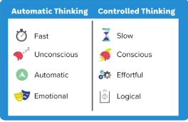

qbook 10.18
1 Lesson 1: Devidedened Mind
1.1 10월 18일, 분열된 마음
1.2 의견 불일치 경험
이해하려고 노력하지 않거나 무작정 자기 주장만 강조할 때 답답했다.
1.3 고대의 뇌
우리는 현대 첨단 사회에 살고 있으나, 우리의 뇌는 여전히 과거의뇌로 아직 적응이 안 됐다.
1.4 정신의 지름길, Mental Shortcuts
우리는 정신의 지름길을 여전히 이용하지만, 원시적인 뇌에서 사용하던 것이 현대 환경에서 추론하고 의사결정하는 데 똑같은 실수를 계속 반복하게 한다.
1.5 Our Divided Minds
우리 뇌에는 자동적 처리(감정, 직관에 대한 것을 처리), 통제된 처리(의식적이고 분석적인 것을 처리) 두 가지 기능이 있다. 이 두 가지가 처리하는 방식이 다르기에 서로 부딪힌다.

1.6 Intuitions First, Reasoning Second
우리가 생각을 할 때 직관이 먼저이고 그 다음이 추론이다. 직관적 반응을 할 때 코끼리가 이끈 것이다. 그 다음 통제, 의식, 논리는 첫인상을 합리화하는 논리를 제공하는 데 동원이 된다.
핵심 - 의식은 사후적 합리화 This happens so quickly and seamlessly that we don’t even realize it. We’re left with the illusion that we’ve arrived at a decision through careful deliberation.
1.7 확증평향
우리가 갖고 있는 기존의 신념과 일치하는 것은 받아들이고, 그렇지 않은 것은 받아들이지 않는다.
1.8 Swapping Places(입장을 바꿔보기)
step 1. Step 1. Identify when your elephant is taking charge. step 2. Imagine a different perspective.
2 Lesson 2: Us and Them
2.1 이중처리이론
직관 체계: 빠른, 무의식적인, 자동적인, 감정적인 추론 체계: 늦은, 의식적인, 노력적인, 논리적인
우리의 직관이 추론을 이끈다
2.2 The Perception Gap
나와 반대편에 있는 사람의 실제 신념과 내가 생각하는 그들의 신념과는 갭이 있다. 잘못된 전제 - 지각의 갭(개인의 상호작용과 관련)
2.3 What Creates the Perception Gap?
- Echo-chambers: 상호작용하면서 (끼리끼리) 그 견해를 공유하고 강화 시킨다.
- Extreme views are loudest. 미묘한 차이보다는 극단적인 견해가 관심을 끈다.
2.4 Where Do Our Differences Come From?
Moral Foundations Theory(도덕 기반 이론) - 6가지 기준으로 세상을 판단한다.
2.5 6가지 기준(도덕 판단)
6가지: 돌봄, 공평, 자유, 충성, 권위, 순결 이 6가지는 자라온 배경, 문화 등에 따라 달라질 수 있다.
2.6 Our Moral Intuitions
직관(코끼리)이 6가지 도덕 기준을 이용해 필터한다(걸러낸다). 이것을 통해 세상을 이해한다. 이는 순식간에 이루어 지기 때문에 자신이 잘 모르는 쟁점에 대해서도 강하게 이끈다.
2.7 Uncovering the Moral Foundations
돌봄: 다른 사람을 돌봐주는 것, 유해끼치는 것을 막는 것(친절함) 공감, 친절함을 우선시 한다.
공평: 속임수를 쓰는 것을 싫어함. 공평, 상호성, 정의에 근간이 되는 것. 정직과 관련이 있다.
자유: 결정을 스스로 내고싶은 자유. 개인의 자유에 근간. 악재에 반대
충성: 내집단에 대한 충성. 내가 속한 집단에 대한 소속감.
권위: 전통, 노인, 합법적인 것(권위)에 대한 존중.
순결: 신성에 대한 것. 그런것들을 오염 시키는 것은 도덕적으로 그르다. 실질적인 유해가 없더라도 거부감을 불러옴.
2.8 The Implications
똑같은 도덕 기반을 이용하지만 적용하는 방식은 다르다.
3 Lesson 3: Get Curious
3.1 Warriors Lose
우리가 이기려고 했을 때 - 의견불일치 발생 1. 다른 편은 더 방어적이게 되고, 2. 다른 편은 위협적이나 공격적으로 느껴지고, 3. 그 사람과의 관계는 손상이될 수 있다.
논쟁에서 이겼지만, 상대방과의 관계가 손상
3.2 The Illusion of Explanatory Depth(설명 깊이의 착각)
사람들은 어떤 사물이 작동하는 방식을 잘 안다고 착각을 한다. 잘 안다고 생각하지만, 그렇지 않은 경우가 많다.
3.3 Embracing Not Knowing
실제로 잘 알지는 못하지만, 그 쟁점에 대한 강한 느낌을 가지고 있다. 이러한 사실을 인정한다는 것은 좋은 것이다. 잘 알지 못한다는 것을 받아 들여라
3.4 Intellectual Humility(지적 겸손)
내가 틀릴 수 있다는 것을 인정하는 것, 지적으로 겸손한 사람은 내가 틀렸다는 것을 받아들이는 것이 우리의 삶의 이유이고, 우리의 성장의 순간으로 파악한다.
3.5 Belief Updating
새로운 근거 -> 우리의 신념 업데이트
3.6 Being Willing to Change Your Mind
우리의 마음을 바꿀 자세가 되어있어야 한다.
3.7 Changing Your Mind
내가 틀릴 수 있는 가능성을 열어두고 새로운 신념을 갱신할 수 있는 것이 중요하다.
3.8 Explorer Mindset(탐험가)
탐험가의 자세 -> 열린 마음 탐험가의 마음가짐으로 새로운 것을 받아들일 수 있어야 한다. 탐험가의 마음가짐으로 똑같이 싸우지 말아야 한다.
3.9 Asking Questions
호기심을 가져라. 탐험가의 마음가짐으로 즉각적으로 반박하지 않고, 호기심과 궁금증을 갖고 질문을 해라.
3.10 Good and Bad Questions
판단하는 질문하는 것, 조언인 것처럼 말하는 것은 상대방을 공격하는 것. -> 공격하는 식의 질문은 하지말 것.
3.11 Constructive Questions(건설적 질문)
정말 호기심 있는 것인가(답을 알고 싶어하는 진실된 마음) “can you say more about what you mean when you say ___?”
마음이 열려있는가(열린 질문) “how have you come to believe that?”
복잡한 내용을 추가해라 “have you always felt this way?”
이야기를 끌어내라 “can you share somethings from your life that led you to believe that?”
궁금증의 톤을 갖고 있어라
3.12 Life Hacks
Why is this issue important to you? Can you tell me more?(조금만 더 얘기해줘) Can you share more about what you mean when you say Why do you think that is?(명확하게 얘기해줘) Can you share something about your experience that may have led you to believe ?(상대방을 방어적으로 만들기 보다는 상대방의 상황을 들어보기) Is there anything about where you feel conflicted or pulled in two different directions?(복잡성을 꾸려내는) What is at stake for you or someone you know about this issue?(이해관계) Why do you think you care so deeply about this issue?(깊이 관여) Have you always felt that way?
3.13 Lesson 3 Recap
- 마음가짐이 중요하다.
- 이기려고 하지말기
- 탐험가적 마음가짐
- 지적 겸손은 우리 삶의 모든 측면에 적용된다.
- 질문을 할 때 진정한 호기심을 갖고 질문하기
What’s one thing you want to remember from this lesson? 탐험가적 마음가짐이 중요하다.
In the next lesson, we’ll flip the script, and you’ll be the one being asked questions! In lesson 4, you’ll learn all about storytelling. 지적 겸손의 태도를 갖기, 상대방과 말을 할 때 이기려고 하지 않고 호기심을 갖고 질문하기
4 Lesson 4: Storytelling
4.1 Stories Matter
이야기를 끌어내는 것이 중요(이야기는 우리의 삶에 핵심적인 요소)
4.2 When Reasoning Backfires
코끼리 - 감정적, 기수 - 논리적 확증편향이 있기 때문에 의견이 불일치 할 때 사실, 논리를 제시하면 기수는 방어적으로 들어가게 된다.
4.3 The Power of Stories
코끼리한테 접근하는 방법은 감정과 직관에 호소(이야기하기) 이야기는 사고에 대한 맥락을 제시하여 사람들을 감정적으로 마음을 움직이게 한다. -> 이야기는 매우 강력한 도구